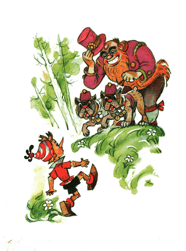
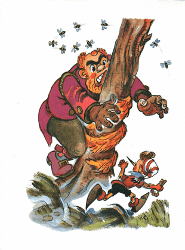

Signor Karabas menuntun dua anjing polisi. Mendapati para buronan di lapangan rumput, dia membuka mulutnya yang bergerigi.
- Aha! /dia berteriak lalu melepaskan anjing-anjing itu/
Anjing-anjing buas itu mula-mula menggerus-gerus tanah dengan kaki belakang. Mereka sama sekali tidak menggeram, bahkan mereka menoleh ke arah lain, bukan ke arah para buronan; begitu pede dengan kekuatan mereka.
Kemudian anjing-anjing buas itu dengan santai berjalan ke arah, di mana Buratino, Artemon, Pierrot, dan Malavina, mematung ketakutan.
Semua begitu senyap. Karabas Barabas berjalan terkatung-katung mengikuti anjing-anjing buas polisi. Jenggotnya berulang kali terlepas dari saku jaket dan terinjak kakinya sendiri.
Artemon menekuk ekornya dan menggeram penuh amarah. Tangan Malavina gemetar:
- Takut, aku takut!
Pierrot menurunkan lengan lalu menatap Malavina, yakin bahwa semua sudah berakhir.
Buratino yang paling punya akal:
- Pierrot, /dia berteriak/ tuntun gadis, bawa lari ke danau angsa... Artemon, turunkan bungkusan, lepaskan jam; kau akan bertarung!..
Malavina, begitu mendengar komando yang gagah tersebut, langsung melompat turun dari Artemon, mengangkat roknya, lari ke danau angsa. Pierrot mengejarnya.
Artemon melemparkan bungkusan-bungkusan dari punggungnya, melepaskan jam di kakinya dan pita di ujung ekornya. memperlihatkan gigi-gigi putihnya lalu melompat ke kiri, lompat ke kanan, meregangkan otot-otot, dan juga mulai menggerus-gerus tanah dengan kaki belakangnya.
Buratino memanjat batang bergetah naik ke atas pohon pinus Italia, bertahan seorang diri di lapangan, dan di atas sana dia berseru, berteriak, dan melolong dengan segenap kerongkogannya:
- Margasatwa, burung, serangga! Kita diserang! Selamatkanlah manusia kayu yang tak berdosa ini!
Bulldog-bulldog polisi itu kali ini hanya melihat Artemon dan serentak menerjangnya. Pudel tangkas itu menghindar lalu dengan giginya dia caplok pangkal ekor salah satu anjing buas itu, sekaligus mengigit paha anjing yang satunya lagi.
Bulldog-bulldog itu menarik ekor mereka putar haluan balik menerjang si pudel. Dia seketika melompat tinggi, menjebloskan mereka di bawahnya, dan sekali lagi berhasil mencabik-cabik, yang satu kena pinggang, satunya lagi kena punggung.
Kali ke tiga bulldog-buldong itu menyerang lagi. Lantas Artemon menyibakkan ekornya ke rumput, lari berputar melingkar-lingkar di lapangan, sesekali membiarkan mereka mendekat lalu menghindar tepat di depan batang hidung mereka
Bulldog-bulldog pesek itu kali ini benar-benar jengkel, mendengus-dengus, mereka ancang-ancang untuk menerjang Artemon, nekat, bahkan siap mati, untuk bisa sampai ke leher si pudel berengsek.
Sementara itu Karabas Barabas menghampiri pohon pinus Italia, meraih batangnya lalu dia goyang-goyangkan:
- Turun, turun!
Buratino, dengan dua tangannya, dua kakinya, bahkan giginya, erat-erat bertahan di dahan pohon. Karabas Barabas menggoncang-goncang pohon itu sehingga semua runjung-runjung di dahan pohon bergoyang-goyang.
Di atas pohon pinus italia itu bergelantungan runjung-runjung besar nan runcing, seukuran buah melon berukuran sedang. Kalau runjung sebesar itu membentur kepala; rasanya aduh..!
Buratino kewalahan berpegangan di atas dahan yang bergoyang-goyang. Dia lihat, Artemon telah menjulurkan lidahnya yang merah terkulai dan larinya semakin melambat.
- Berikan kuncinya! /teriak Karabas Barabas, rahangnya menganga/
Buratino merayap-rayap di atas dahan, menghampiri runjung yang lumayan besar dan mulai menggerogoti tangkai di mana runjung itu tergantung. Karabas Barabas menggoncang semakin kencang, dan satu runjung besar pun meluncur terjun; Bak!!; Tepat mengenai rahangnya yang bergerigi.
Karabas Barabas sampai terjongkok.
Buratino merobek runjung yang kedua, kemudian; Buk!!; Tepat menimpa ubun-ubun Karabas Barabas, bagaikan bedug.

- Kita diserang! /sekali lagi Buratino berteriak/ Bantulah manusia kayu yang tak berdosa ini!
Bantuan pertama datang, burung layang-layang; terbang menyabit membelah udara di depan hidung bulldog-buldog.
Anjing-anjing buas itu mencaplokkan giginya dengan sia-sia; itu burung layang-layang bukan lalat: bagaikan kilat gemerlap; zeb.... lewat di depan batang hidung mereka!
Dari balik awan, yang mirip kepala kucing, menukik tajam alap-alap hitam; yang biasa membawa Malavina bermain; dia terkam punggung anjing polisi itu dengan cekernya, melambung dengan sayapnya yang perkasa, mengangkat anjing buas itu lalu menjatuhkannya...
Anjing buas itu mengkaing-kaing, jatuh dengan kaki menghadap ke atas.
Artemon menerjang anjing satunya lagi dari samping, dia sambar dadanya, terguling, gigit, lompat ke belakang
Dan sekali lagi, melingkar-lingkar di lapangan, mengitari pohon pinus tunggal, Artemon dikejar-kejar anjing-anjing buas polisi yang babak belur dan compang-camping.
Kodok-kodok datang membantu Artemon, mereka menyeret dua ekor ular, yang buta karena usia. Bagaimanapun, ular-ular itu akan segera mati; entah tertiban pohon, atau berakhir di dalam perut bangau. Kodok-kodok itu membujuk mereka untuk mati sebagai pahlawan.
Si jagoan Artemon kali ini memutuskan untuk masuk ke dalam peratrungan terbuka. Dia duduk di ekor, memperlihatkan taring.
Bulldog-bulldog menerjangnya, mereka bertiga pun bergulung-gulung.
Artemon mencaplok-caplokkan rahangnya, mencabik-cabik dengan cakarnya. Bulldog-bulldog, tanpa memperdulikan gigitan dan cabikan, mereka menginginkan satu hal; yaitu meraih leher Artemon dengan cekikan mematikan. Lengkingan dan gonggongan terdengar ke sepenjuru lapangan.
Datang membantu Artemon, landak sekeluarga: ada si landak, istri si landak, ibu mertua si landak, dua tante landak janda dan nona-nona landak.
Terbang berdengung-dengung, lebah gemuk corak-hitam berpolet emas, tawon bengis sayapnya berdesis-desis. Rayap-merayap kumbang tanduk dan kumbang api berkumis panjang.
Margasatwa, burung dan serangga, sukarela menyerang anjing-anjing polisi terkutuk.
Si landak, istri si landak, ibu mertua si landak, dua tante landak janda dan nona-nona landak; bergelinding dengan putaran yang sangat cepat membenturkan bola cucuknya ke moncong bulldog-bulldog itu.
Lebah dan tawon menyengat mereka dengan sengatan beracun. Pasukan semut api baris merayap naik ke lubang hidung mereka lalu di sana mereka menyiramkan asam format beracun.
Kumbang tanduk dan kumbang api menggigit pusar mereka.
Burung layang-layang mematuk ubun-ubun anjing buas itu satu persatu dengan paruhnya yang runcing melengkung.
Kupu-kupu dan lalat berkerumun menghalangi mata mereka, menutupi penglihatan.
Kodok-kodok memberi aba-aba pada dua ekor ular, yang siap mati sebagai pahlawan.
Dan selanjutnya, ketika salah satu Bulldog rahangnya menjelalak lebar; untuk membersinkan asam format beracun; si ular tua buta melesakkan kepalanya masuk ke dalam tenggorokan lalu berputar menyekrup ke dalam kerongkongan.
Begitu pula dengan bulldog yang satunya lagi; si ular buta yang kedua sudah berjejal masuk ke dalam mulutnya.
Dua anjing buas itu, dihajar, disengat, dicabik; mengap-mengap tak berdaya berguling-guling di tengah lapangan.
Jagoan Artemon keluar dari pertarungan sebagai pemenang.
Sementara itu, Karabas Barabas akhirnya dapat mencabut runjung berduri dari mulut besarnya.
Benturan di ubun-ubun membuat matanya berputar-putar. Dengan sempoyongan, dia kembali meraih batang pohon pinus italia. Angin melambaikan jenggotnya.
Buratino mengamati dari atas, di ujung batang pohon, ternyata ujung jenggot Karabas Barabas, terbawa angin, menempel di getah batang pohon itu.
Buratino bergelantung di ujung batang pohon, lalu mengolok-olok:
- Paman, kau takkan bisa menangkapku paman, kau takkan bisa menangkapku!..
Dia melompat turun lalu berlarian mengelilingi pohon pinus itu. Karabas Barabas, menggapai-gapaikan tangannya, berusaha menangkap bocah itu, terhuyung-huyung mengejarnya mengelilingi pohon.
Berlari satu keliling, eit..eit..., hampir, dia hampir menangkap bocah licin itu dengan jari-jemarinya yang kasar, lari lagi satu keliling, lari lagi sampai tiga keliling...
Jenggotnya berbelit-belit melilit batang pohon, melekat erat pada getah.
Setelah jenggot Karabas Barabas terlilit habis, dan hidungnya mendarat di batang pohon, Buratino menjulurkan lidahnya panjang-panjang lalu berlari ke Danau Angsa; mencari Malavina dan Pierrot.
Di lapangan tersisa dua anjing buas polisi, dengan hidup mereka yang sia-sia bahkan bangkai lalat kering pun tak sanggup mereka berikan. Dan sang doktor ilmuan boneka linglung, signor Karabas Barabas, melekat erat bersama jenggotnya di pohon pinus Italia.